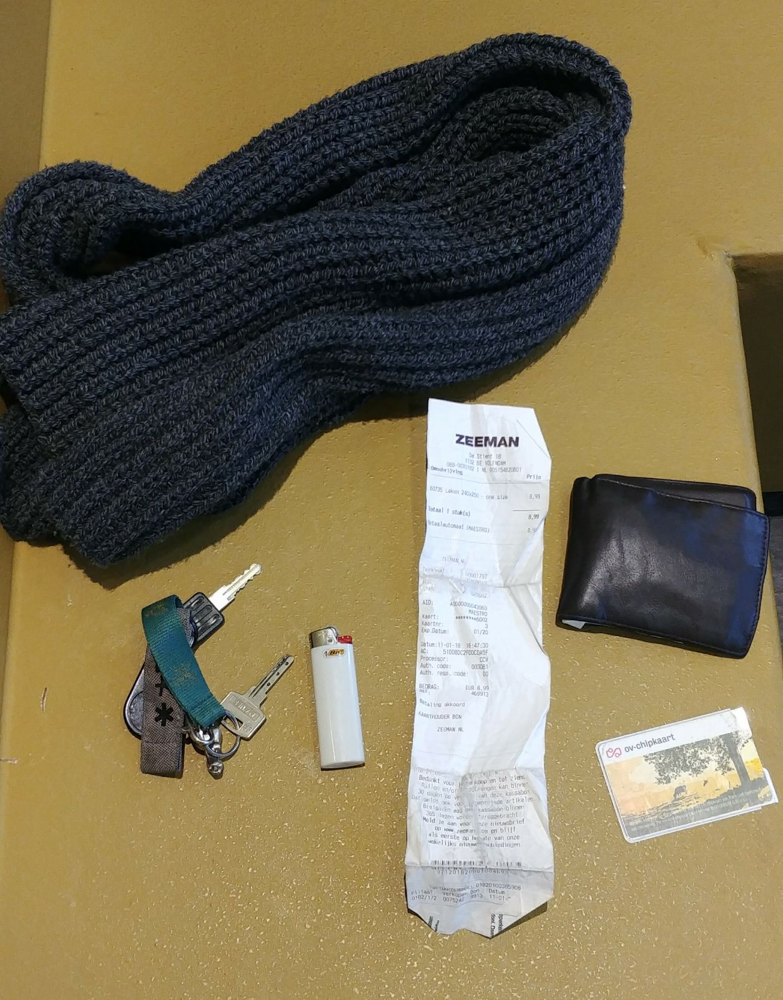

Guido de Vries

Ik ben Guido de Vries, ik ben 20 jaar en kom uit Edam. Ik ben een ietwat luie student, en werk het liefst zo min mogelijk. Mijn hobbies zijn muziek luisteren en nieuwe artiesten ontdekken, gamen, koken en feesten met mijn vrienden.

Wat wil je worden?
Ik weet het nog niet zo goed. Ik denk dat er een heleboel mogelijkheden zijn vanuit CMD en wil nog niet me op één ding focusen.
Welke kwaliteiten wil je hier ontwikkelen in dit project?
Ik vind logo's en pictogrammen heel interessant, en wil hier graag meer over leren. Verder wil ik ook graag beter worden in schetsen/tekenen.
Waarom heb je gekozen voor project Visual?
Omdat ik het ontwerpen en ideeën maken een van de leukste onderdelen vind binnen CMD.
Wat zijn je sterke en zwakke punten als ontwerper nu?
Ik denk dat ik best wat in mijn mars heb en mooie dingen kan creeëren, maar ik denk ook dat ik dingen snel goed genoeg vind, en niet ver genoeg doorstreef naar 'perfectie'.
Waarop wil je aan het einde van het project beoordeeld worden?
Ik wil beoordeeld worden op hoe goed mijn werk eruit ziet, niet of het precies 100% past bij mijn research. Nee, alleen het eindproduct.